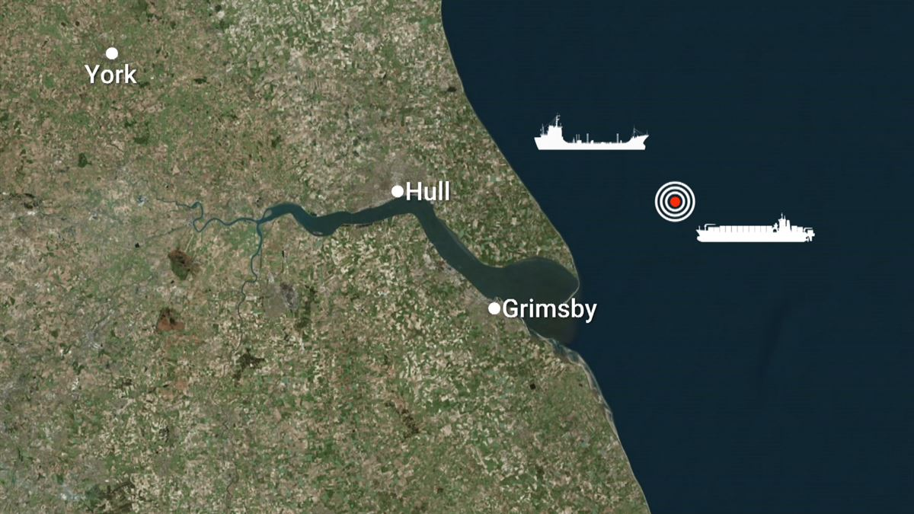

José Bretón reconoce por primera vez que asesinó a sus hijos
Han pasado ya 14 años desde que José Bretón asesinara a sus hijos Ruth y José, de seis y dos años, quemando sus cuerpos en la cordobesa finca de Las Quemadillas...
La revelación ha salido a la luz a través de una serie de cartas...
El crimen se remonta al 8 de octubre de 2011...
Tres semanas antes, su mujer Ruth Ortiz le había comunicado su intención de divorciarse...
El caso, que conmocionó a todo el país y abrió por primera vez las conversaciones públicas sobre la violencia vicaria...
Un petrolero y un buque mercante colisionan frente a las costas del este de Reino Unido
Un gran operativo de rescate se puso en marcha este lunes...
El Stena Immaculate es uno de los 10 petroleros...
Tras el accidente, 36 personas fueron rescatadas...
Peligros ecológicos:
- El combustible para aviones tiene un punto de ebullición alto...
- El combustible para aviones se puede descomponer en el agua...
- Las condiciones meteorológicas también influyen...
- La rapidez de la respuesta será crucial...